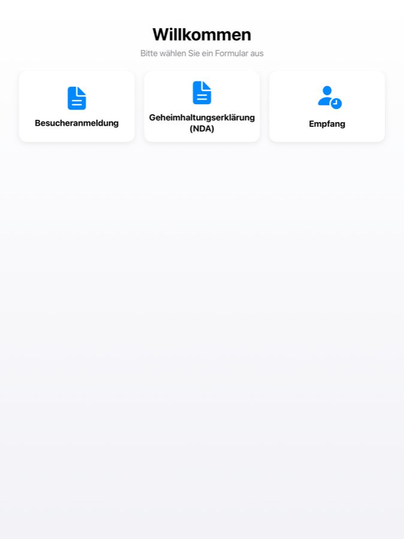
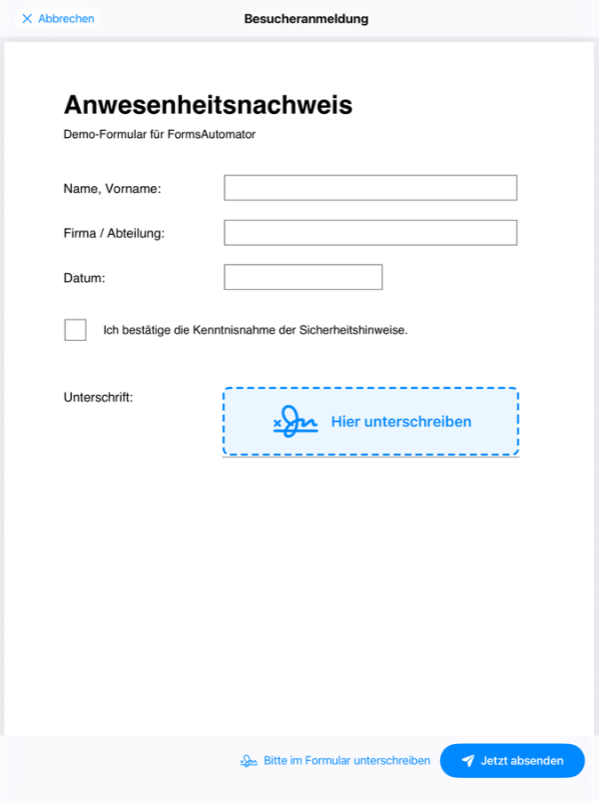
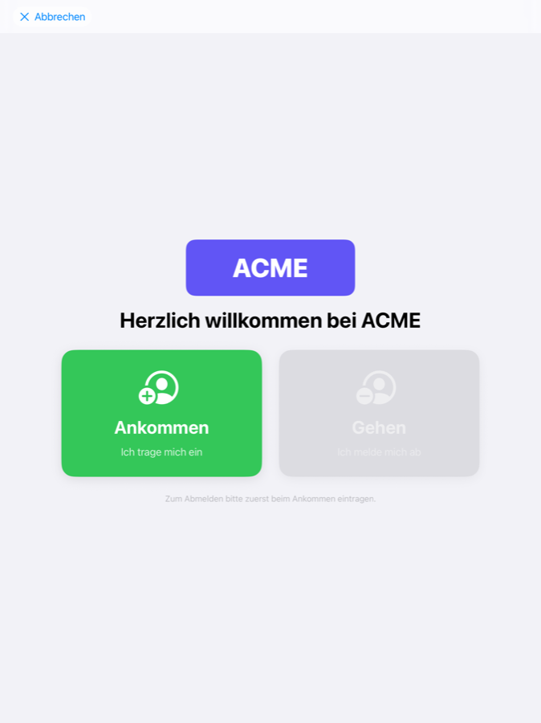

FormsAutomator
Formular-Kiosk für iPad — ausfüllen, unterschreiben, zustellen
Verwandeln Sie ein iPad in einen professionellen Formular-Kiosk — für Empfang, Werkstor, Baustelle, Praxis oder Veranstaltung:
- Beliebige ausfüllbare PDFs (AcroForm) importieren und im gesperrten Kiosk-Modus ausfüllen lassen
- Direkt im Dokument unterschreiben — die Unterschrift wird fest ins PDF eingebettet
- Automatisch zustellen an SharePoint/Microsoft 365, FTP/FTPS, SMB, E-Mail oder eine eigene REST-/Webhook-Schnittstelle
- Offline-sicher: nichts geht verloren, alles wird automatisch nachgeliefert
- Vom Einzelgerät bis zur Flotte: Übernahme per QR-Code oder zentral per MDM (Intune, Jamf, Mosyle)



Turn an iPad into a form kiosk: fill in PDF forms, sign right in the document and deliver automatically to SharePoint, FTP/FTPS, SMB, email or your own REST/webhook endpoint — offline-proof, from a single device to entire MDM-managed fleets.